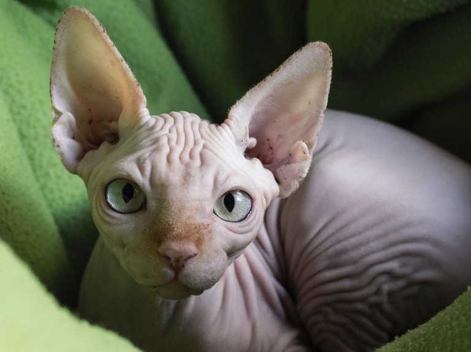

Persian Cats
Persian cats are pretty much the opposite of hairless cats, and they are adorabe. Nothing can compare to the beautiful long fur of persian cats.

Hairless cats get hated on all the time, but I think they deserve so much more love. They look like little skin bags running around and it is absolutely hilarious.
Persian cats are pretty much the opposite of hairless cats, and they are adorabe. Nothing can compare to the beautiful long fur of persian cats.
Black cats are so insanely cute. Their eyes always look so pretty against their fur, and look like little panthers. I do have a slight bias for black cats because I have one, but i believe they also deserve more love, because they are NOT bad luck, and if anything i think they are super spiritual.